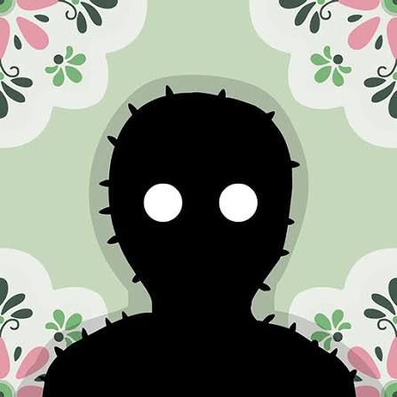

“A mysterious room with no way out.”
Samsara Room é uma aventura de puzzles no estilo point-and-click criada pela Rusty Lake. O jogo coloca o jogador dentro de um quarto misterioso, aparentemente comum, mas sem nenhuma porta pela qual seja possível escapar. Considerado um dos precursores do universo Rusty Lake, Samsara Room apresenta vários elementos que posteriormente se tornariam características da franquia, como ambientes surreais, objetos simbólicos, transformações e enigmas estranhos. Em 2020, o jogo recebeu um remake completamente reconstruído, com novos puzzles, história, gráficos e trilha sonora.
O jogador acorda dentro de um quarto estranho, cercado por objetos aparentemente comuns, como um telefone, um espelho, um relógio de parede e outros elementos misteriosos. Existe apenas um problema: não há nenhuma porta para sair. Para escapar, é necessário observar cuidadosamente o ambiente, encontrar objetos escondidos e descobrir como cada elemento pode ser utilizado. À medida que os enigmas são resolvidos, o quarto começa a se transformar e a realidade deixa de parecer normal. O jogador passa por diferentes formas e ambientes enquanto tenta compreender o significado de tudo aquilo. A jornada conduz a uma experiência cada vez mais surreal, na qual escapar do quarto parece estar relacionado a alcançar uma espécie de iluminação.